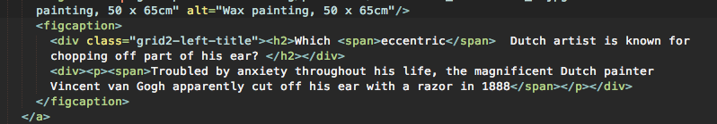
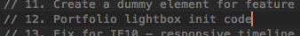
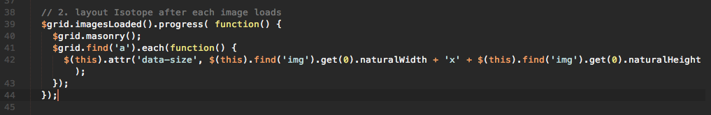
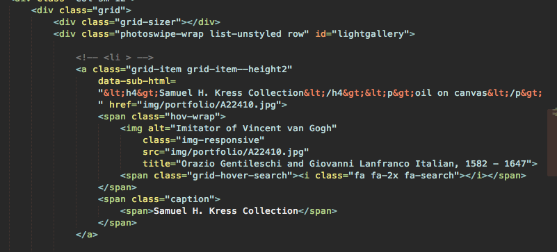
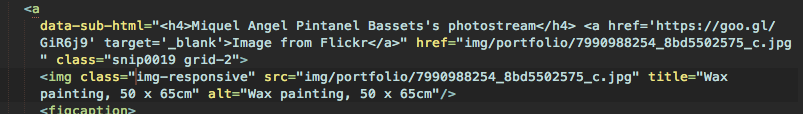
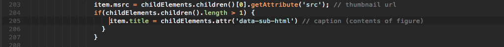

Back to Basics v1.0 by Ajency.in
Created: 10/10/2016
Email: talktous@ajency.in
Thank you for purchasing this theme. If you have any further questions, please get in touch with us at the Themeforest "Item Discussion" section.
Table of Contents
A) HTML Structure - top
This theme has 2 variations, but the HTML structure is similar. All of the information is nested within a div with class site-wrapper.
The content is broken into <section>s. Each section has an ID that helps in the one page navigation.
You can use the LESS files if you are comfortable with LESS, or you can directly edit the CSS files. Below is the list of CSS files and LESS files and their locations
LESS/CSS Files specific for Portfolio:
- Portfolio
- LESS
- main.less
(includes the @import to the required LESS files from the assets/ folder)
- landing-page.less
- left-column.less
- classic.less
- CSS
- main.css
- landing-page.css
- left-column.css
- classic.css
B) Portfolio - top
There are 2 variations of the portfolio gallery, one with a text overlay on hover and the other with an icon overlay. Both styles use the same lightbox plugin
The text that appears on hover is present under figcaption

To customise the caption that appears in the popup please see the Photoswipe section below
The portfolio uses Masonry for th emasonry layout and depends on the Imagesloaded plugin to determine when the images have loaded. Code is in the respective js files under init Masonry
C) Plugins and JavaScript - top
This theme uses these Javascript files. JS location assets/js
- jQuery
- Photoswipe.js
- Imagesloaded.js
- Masonry.js
- jQuery easing
- jQuery mousewheel
- Animstion.min.js
-
Custom JS files
- left-column.js
- classic.js
All the plugins are combined into plugins.min.js using Gulp. If you want to change any of the plugins then paste the required files into assets/js/plugins, edit the file Gulp/gulpfile.js and add or remove the plugin's js files between line 40 and line 47
Navigate to the Gulp folder in Terminal and run the command gulp
The plugins will be combined and minified into plugins.min.js and also the 2 custom js files will be minified.
If you are new to Gulp, please checkout their site on instructions to download and use Gulp.
Portfolio Lightbox - Photoswipe.js
The lightbox Photoswipe.js is a powerful plugin. The div pswp right outside the site-wrapper is for the lightbox. You can customise the 'div's present in that set of code but please do not remove any classes/HTML or change the structure. You can add your own DIV there though. The code that runs the plugin is present in the respective js files (it'll show up in the table of contents)

The data-size attribute has to be set right after the images load. Thats the reason for the below code, if the data-size attribute hasn't been set then you'll get a blank screen with the popup controls when you click on a portfolio item.

The HTML structure for the portfolio must be as the following. Change the structure only if you're comfortable in editing the JS file where the portfolio lightbox has been intialised.
The <a class="grid-item " data-sub-html="Caption text goes here"> holds the text/HTML for the caption in the popup

The caption that appears in the popup is from the attribute data-sub-html present in <a> THe captions support HTML, so any HTML content can be inserted there.

If you want to change the element being refered to the popup, please see the custom js files - classic.js for the classic layout and left-column.js for the left column layout

The HTML structure for Photoswipe is slightly different in each of the HTML files, please keep it same unless you are comfortable in editing JS files
D) Sources and Credits - top
I've used the following images, icons or other files as listed.
- Bootstrap 3.3.6
- FontAwesome 4.5.0
- Photoswipe.js
- Animstion.js
- Images used are from https://images.nga.gov/ and Flickr
- Google Fonts - Open Sans and Arapey
- Mockup in the preview is from Pixeden
Once again, thank you so much for purchasing this theme. As said at the beginning, We'd be glad to help you if you have any questions relating to this theme. No guarantees, but we'll do our best to assist. If you have a more general question relating to the themes on ThemeForest, you might consider visiting the forums and asking your question in the "Item Discussion" section.